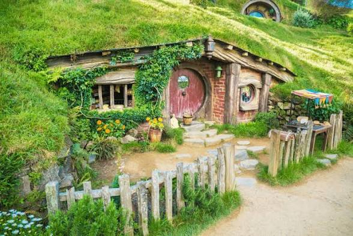
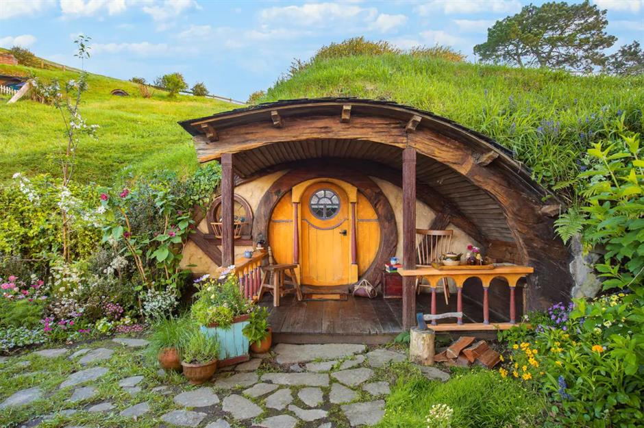
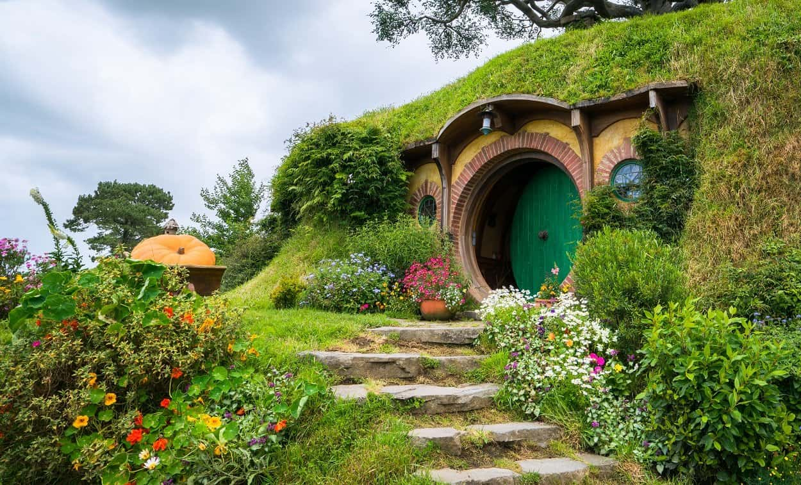

The Hobbit House
The Hobbit House is a small, round, and very cute house. It looks like the home from The Lord of the Rings movies. These houses are built partly under the ground, just like the homes of hobbits in the stories.
The walls of a Hobbit House are usually made of stone or wood, and the roof is covered with grass. From far away, it looks like a small green hill with a door! The door is round, and the windows are small. It feels warm, quiet, and cozy inside.
Most Hobbit Houses have only one floor. There is a living room, a small kitchen, a bedroom, and sometimes a bathroom. The furniture is simple and made of natural materials. When you are inside, you can smell the wood and the earth.
Many people build Hobbit Houses because they want to live close to nature. These houses stay cool in the summer and warm in the winter. They are also good for the environment because they use natural energy and materials.
Visitors love Hobbit Houses because they look like fairy-tale homes. They are perfect for people who like peace, nature, and simple living. Staying in a Hobbit House feels like living in a storybook world!


